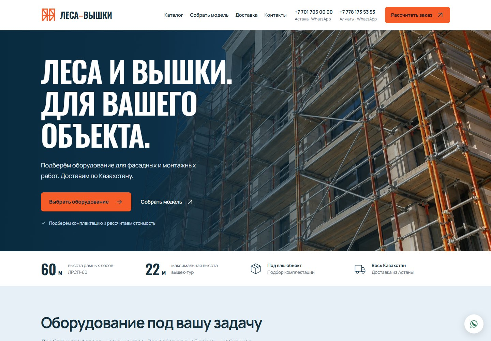

Независимый разработчик цифровых продуктов
KorneyKolokolnikov.
Превращаю идеи
в работающие продукты.
Сайты, приложения и интерактивные решения.
С характером снаружи. С логикой внутри.
От задачи к результату
Избранные проекты.
Разные задачи.
Один подход к деталям.
Я Корней Колокольников. Создаю сайты и цифровые продукты, в которых внешний вид работает вместе с функциональностью.
Мне интересны задачи на стыке дизайна и разработки: от сайта компании до конфигуратора, интерактивной презентации или приложения для управления оборудованием.
Сайты и интерфейсы
Лендинги, корпоративные сайты и каталоги. Продуманная структура, адаптивная вёрстка и понятный путь к действию.
Цифровые продукты
Конфигураторы, панели управления и приложения. Интерфейсы, которые помогают решать конкретную задачу.
Интерактивные презентации
Визуальный выбор объектов, демонстрации и веб-презентации, которые можно изучать в своём темпе.
 Пространство для заказчиков
Пространство для заказчиков
Ваш проект.
Всегда под рукой.
Смотрите результат по отдельной ссылке. Изучайте экраны, открывайте работающую версию и отправляйте комментарии.
Посмотреть пример В примере — реальный проект «Леса-вышки»
Следующий проект может быть вашим